Folio 使用文档
从安装到整篇翻译、AI 接入，一步一步讲清楚。Mac 版和 Windows 版的功能一一对应，文中凡有区别都会标出 MacWindows。
两分钟宣传片，先看一遍整体印象。
1快速开始
安装
在 下载页选择你的系统对应的安装包：
| 系统 | 要求 | 安装包 |
|---|---|---|
| Mac | macOS 14 Sonoma 及以上，Apple 芯片或 Intel | Folio-x.y.z-macOS.dmg |
| Windows Intel / AMD | Windows 10 2004 及以上 | Folio-x.y.z-Windows-x64-Setup.exe |
| Windows ARM | Windows 10 2004 及以上 | Folio-x.y.z-Windows-ARM64-Setup.exe |
Mac 安装步骤
- 打开下载的 DMG，把 Folio 图标拖到“应用程序”文件夹。
- 第一次打开时，macOS 可能提示“无法验证开发者”（Folio 尚未经过 Apple 公证）。打开 系统设置 ▸ 隐私与安全性，滚到页面底部点 仍要打开。
- 也可以在“终端”里运行下面这行，一次解决：
xattr -dr com.apple.quarantine /Applications/Folio.app
Windows 安装步骤
- 双击安装程序。不需要管理员权限，也不需要另装 .NET。
- 如果出现“Windows 已保护你的电脑”，点 更多信息，再点 仍要运行（Folio 暂未做代码签名）。
首次打开
第一次打开时会出现欢迎向导，帮你完成几件事，每一步都可以跳过，之后都能在设置里改：
- 从 Zotero 导入：已有 Zotero 文献库的话一键搬过来，不会改动 Zotero 本身。
- 安装浏览器插件：在论文网页上一键保存到 Folio（见第 9 节）。
- AI 接入：为电脑上已装的 AI 智能体打开 Folio 的接口（见第 10 节）。
- 选择翻译服务：先用免费的 Google / Microsoft 即可，随时可换。
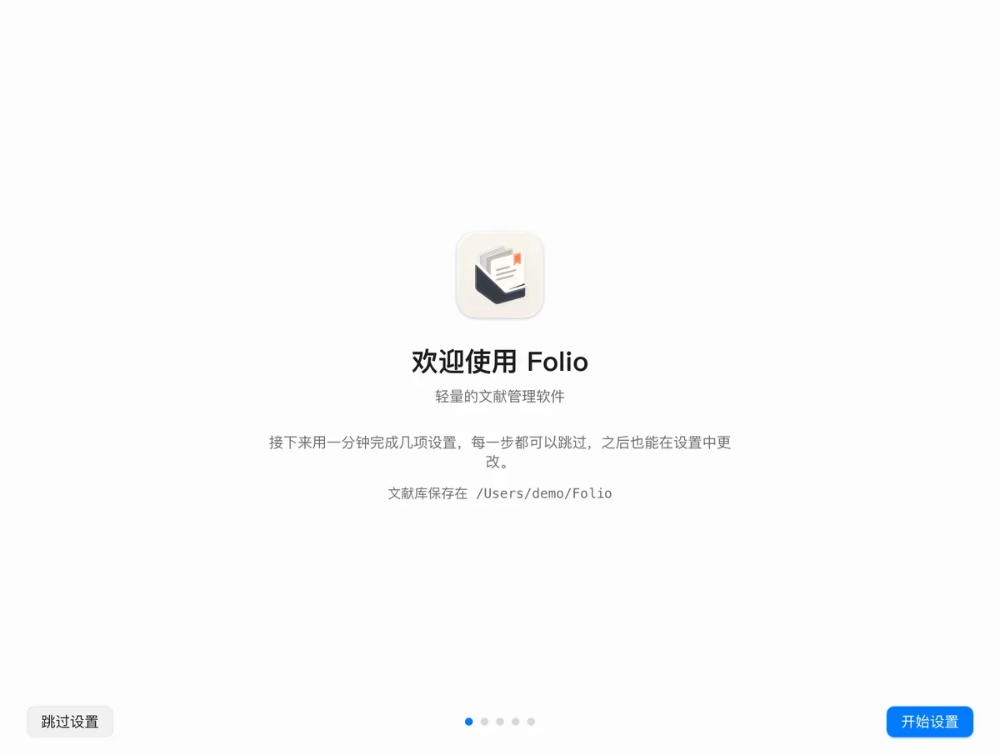
文献库存在哪里
Folio 把所有论文、批注、笔记放在一个普通文件夹里，叫“文献库”：
- Mac 默认是用户文件夹下的
~/Folio - Windows 默认是
C:\Users\你的用户名\Folio
想换位置（比如放进同步盘），在 设置 ▸ 文献库 ▸ 文献库位置 点 更改…，Folio 会把整个文献库搬过去。两个系统的文献库格式完全相同，可以直接打开对方的文献库文件夹。
不要手动改文献库文件夹里的文件名或删除文件，请在 Folio 里操作；PDF 里的批注 Folio 会自己写回文件。
2认识界面
文献库窗口分三栏：左边是边栏（文献库、分组、标签），中间是文献列表，右边是检查器（所选文献的信息、标注和笔记）。把鼠标移到图上的数字，看看每一处是做什么的：
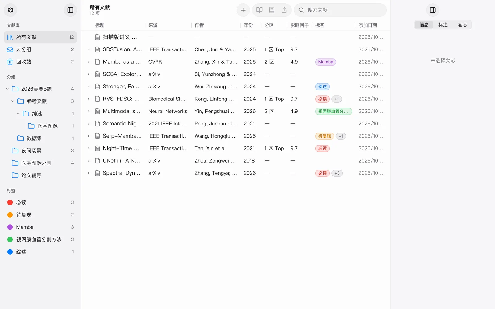
- 1设置：点一下打开设置（Mac 在菜单 Folio ▸ 设置…，⌘,）。
- 2显示 / 隐藏边栏。
- 3文献库：所有文献、未分组、回收站。
- 4分组：像文件夹一样，可嵌套四级。点“分组”旁的 ＋ 新建。
- 5标签：彩色标签，一篇文献可以有多个。
- 6添加：添加文件、通过 DOI 等添加、导入。
- 7打开 · 翻译 · 引用与导出：对所选文献操作。
- 8搜索：搜标题、作者、期刊、标签、笔记和全文。
- 9列标题：点击排序，右键选择要显示的列。
- 10文献列表：双击打开阅读，右键查看全部操作。▸ 展开可看到附件和译文。
- 11检查器：信息、标注、笔记三个标签页。
- 12显示 / 隐藏检查器。
有新版本时，边栏左下角会出现一张小卡片“有新版本可用”，点它即可更新（见第 13 节）。
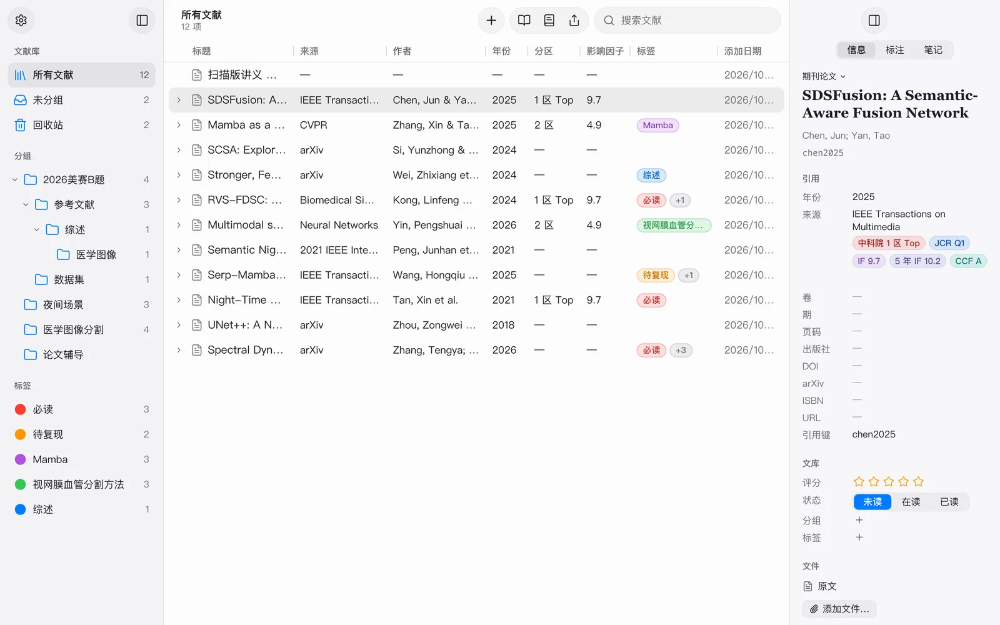
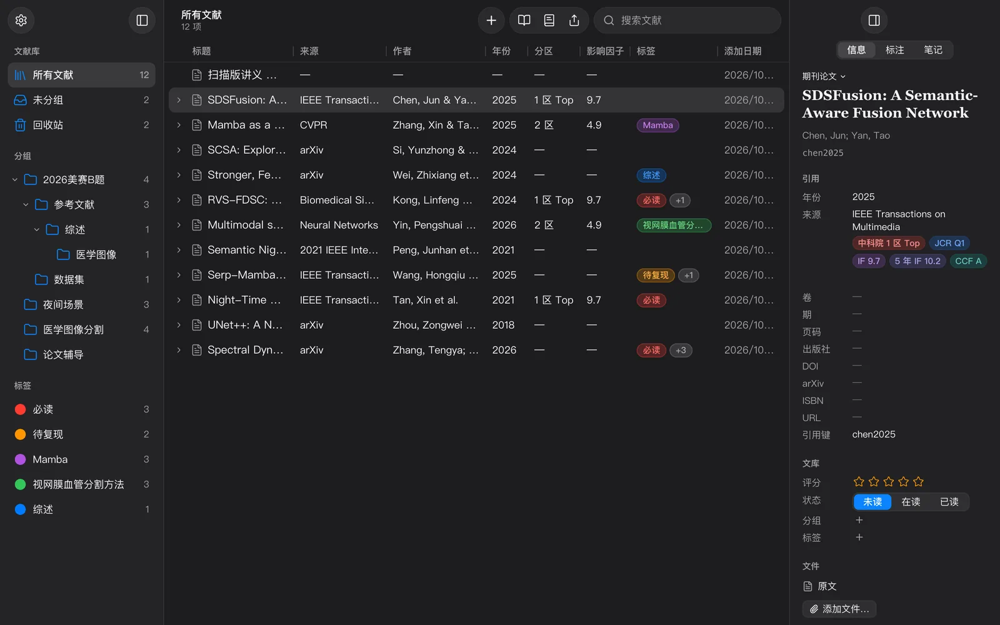
3添加文献
拖入 PDF（最常用）
- 把一个或多个 PDF 拖进文献库窗口（拖到某个分组上，就直接放进那个分组）。
- Folio 会在几秒内识别标题、作者、期刊、年份、DOI，建好条目。
- 识别完成后，可以在检查器里检查或修改信息。
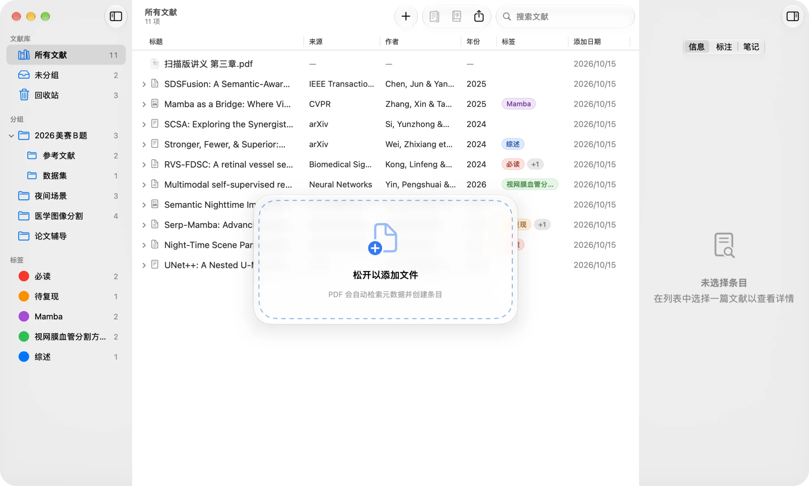
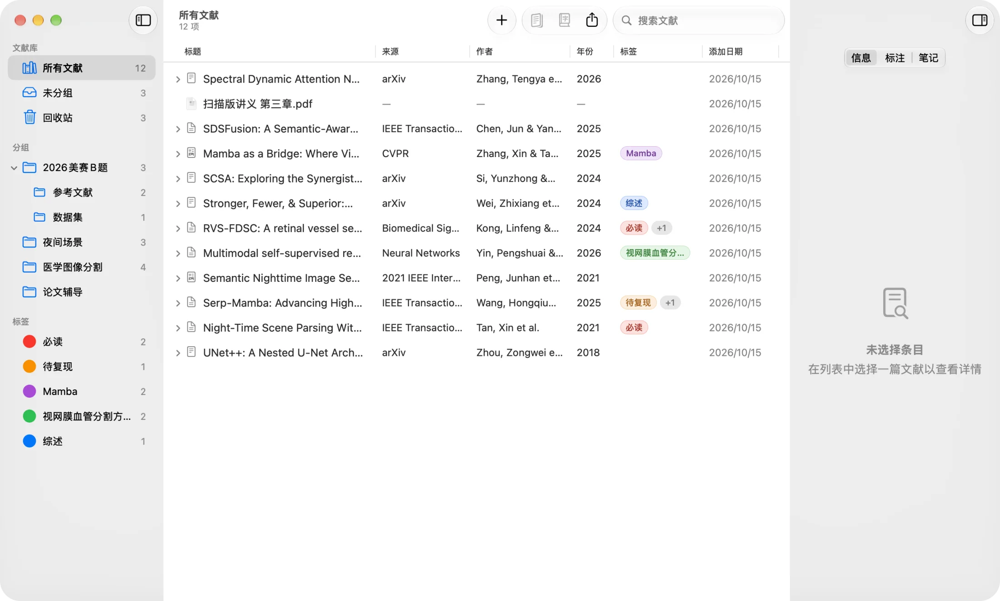
也可以点工具栏的 ＋ ▸ 添加文件…（Mac ⌘O，Windows CtrlO）选择文件。
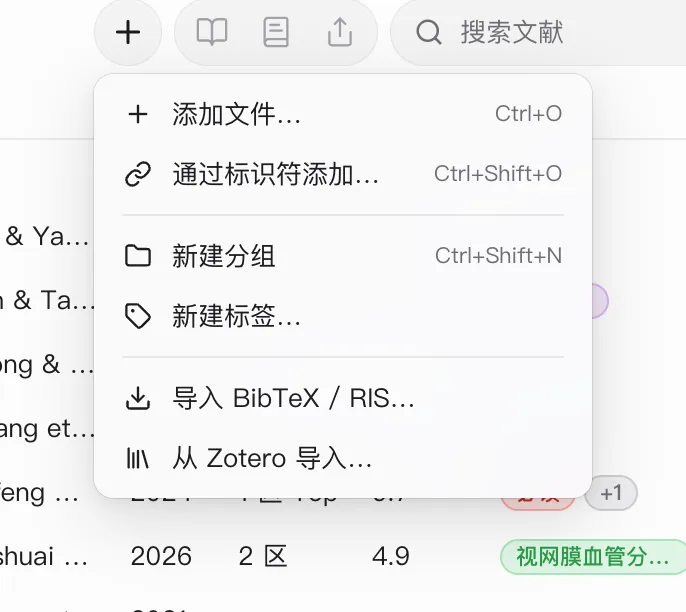
通过 DOI、arXiv 编号或 ISBN 添加
手头只有 DOI、arXiv 编号（如 2501.01234）或书的 ISBN 时：点 ＋ ▸ 通过标识符添加…（⇧⌘O / CtrlShiftO），粘贴进去即可，一次可以粘贴多个。能找到开放获取 PDF 时会一并下载。
导入 BibTeX / RIS，或从 Zotero 迁移
- BibTeX / RIS：＋ ▸ 导入 BibTeX / RIS…，选择
.bib或.ris文件。 - Zotero：＋ ▸ 从 Zotero 导入…，或 设置 ▸ 文献库 ▸ 导入。条目、分组、标签、附件和笔记都会搬过来；只读不写，不会改动 Zotero 的数据。
- 浏览器：在论文页面点 Folio 插件按钮，一键保存（见第 9 节）。
元数据识别与修正
Folio 会依次查询 Zotero 识别服务、Crossref、arXiv、OpenAlex、DBLP、CVF 等来源。识别不准或没识别出来时：
- 重新检索：右键文献 ▸ 重新检索元数据（⌥⌘R / CtrlAltR）。
- 手动修改：在检查器里直接点字段编辑（标题、作者、年份、期刊、DOI 等），文献类型可在顶部切换。
- 识别完成后，Folio 默认按“作者_年份_标题”重命名文件，可在 设置 ▸ 文献库 ▸ 文件 关闭。
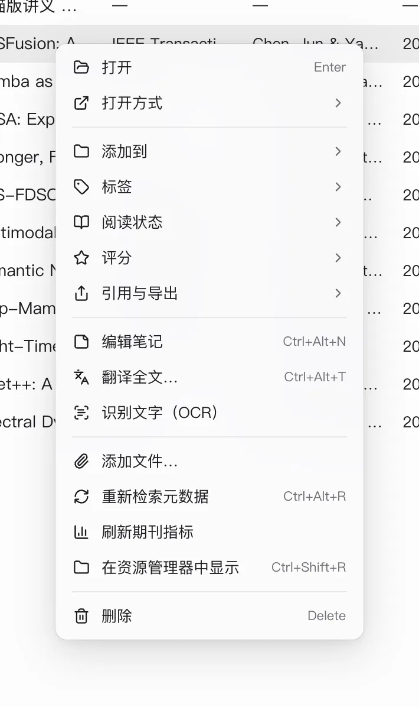
扫描件识别文字（OCR）
扫描版 PDF 里的字其实是图片，无法选中、搜索和翻译。Folio 导入扫描件后会自动识别文字（中英文），识别后就能选中、搜索、翻译，也能重新检索元数据。也可以手动触发：右键文献 ▸ 识别文字（OCR），或在阅读器里点“识别文字”。
Windows 使用 Windows 自带的文字识别，需要系统装有对应语言的“光学字符识别”组件（中文 Windows 默认只有中文）。识别英文论文效果不好时，请看“翻译图片中的文字”里的说明。
4整理与查找
分组
- 新建：点边栏“分组”旁的 ＋，或 ⇧⌘N / CtrlShiftN。右键某个分组 ▸ 新建子分组…，最多嵌套四级。
- 放入分组：把文献拖到分组上，或右键文献 ▸ 添加到。一篇文献可以同时在多个分组里（不是复制，只是归类）。
- 整理分组：拖动分组可调整层级；右键分组可重命名、设置颜色、删除（删除分组不会删除里面的文献）。
- 在 设置 ▸ 通用 ▸ 列表 打开“父分组中显示子分组的条目”，点父分组时就能看到下面所有子分组的文献。
标签、阅读状态与评分
- 标签：右键文献 ▸ 标签，勾选或新建。右键边栏里的标签可改名、换颜色。点边栏的标签，列表就只显示带这个标签的文献。
- 阅读状态：未读 / 在读 / 已读，在检查器或右键菜单里设置。打开未读的论文时会自动标为“在读”（可在设置里关闭）。
- 评分：一到五星，在检查器里点星星。
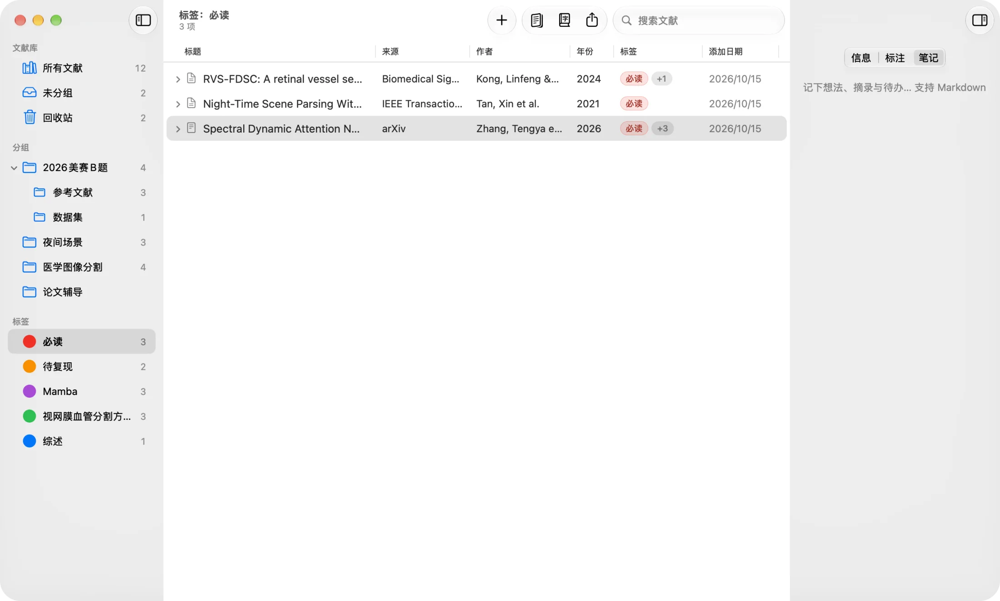
搜索
在右上角搜索框输入关键词（⌘F / CtrlF），会同时搜索标题、作者、期刊、年份、标签、笔记以及 PDF 全文。多个词用空格隔开，表示都要包含。
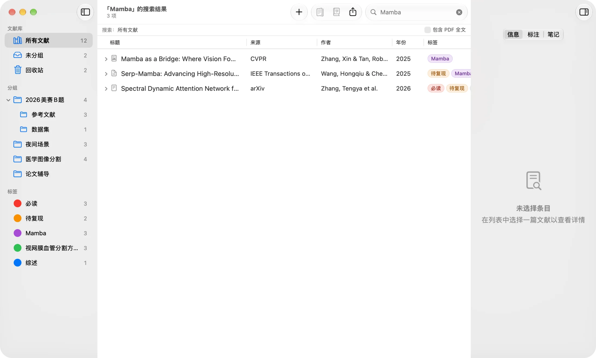
列表与列
- 排序：点列标题；再点一次反向。
- 选择显示的列：在列标题上右键，可选标题、来源、作者、年份、分区、影响因子、标签、评分、阅读状态、添加日期等。拖动列标题调整顺序，拖动边线调整宽度。
- 多个文件：一篇文献可以挂多个文件（正文、补充材料、译文）。点行首的 ▸ 展开查看。右键 ▸ 添加文件… 可补充附件。
期刊分区与影响因子
在 设置 ▸ 检索 ▸ 期刊指标 填入 easyScholar 密钥后，检查器会在“来源”下方显示中科院分区、JCR 分区、影响因子、CCF 等彩色标签，列表也可以添加“分区”“影响因子”列并排序。
- 登录 easyScholar，在“开放接口”页面复制 SecretKey。
- 粘贴到 设置 ▸ 检索 ▸ easyScholar 密钥，点 测试 确认可用。
- 打开“自动获取期刊分区与影响因子”。同一期刊只查询一次，结果缓存 30 天；右键文献 ▸ 刷新期刊指标 可立即更新。
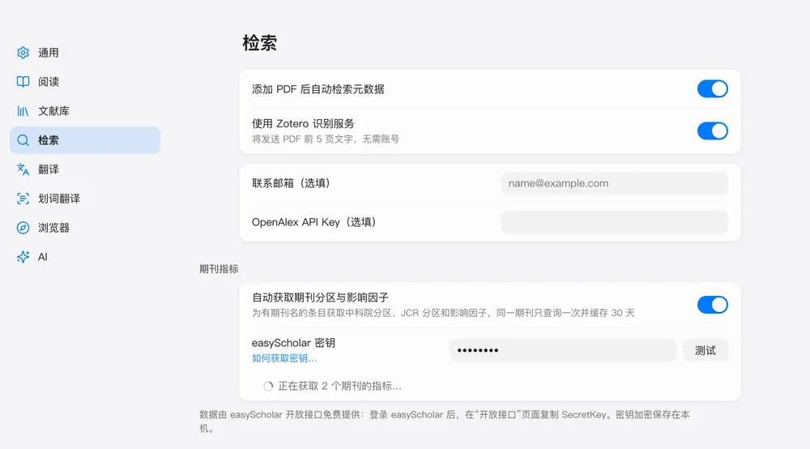
回收站
删除的文献先进回收站，可以随时还原。右键回收站 ▸ 清空回收站… 才会真正删除。默认会自动彻底删除放了超过 30 天的内容，可在 设置 ▸ 文献库 ▸ 文件 关闭。
5阅读与批注
阅读器
- 打开：双击文献，或选中后按 Return / Enter。每篇论文一个标签页，可以同时开多篇，Folio 会记住每篇读到的位置。
- 翻页与缩放：滚动阅读；⌘+ / ⌘-（Windows 用 Ctrl）缩放。首次打开的缩放、单页 / 双页显示可在 设置 ▸ 阅读 设定。
- 查找：⌘F / CtrlF 在当前论文中查找，⌘G 下一个。
- 目录与缩略图：在阅读器侧边栏切换，点击跳转。
- 打印：⌘P / CtrlP。
- 自定义工具栏：Mac 在工具栏上右键 ▸ 自定义工具栏…；Windows 右键阅读器工具栏 ▸ 自定义工具栏…，可添加缩放、翻页、对照阅读、打印等按钮并拖动排序。
- 想用别的阅读器打开 PDF：设置 ▸ 通用 ▸ 打开 里选择“系统默认应用”或指定应用。
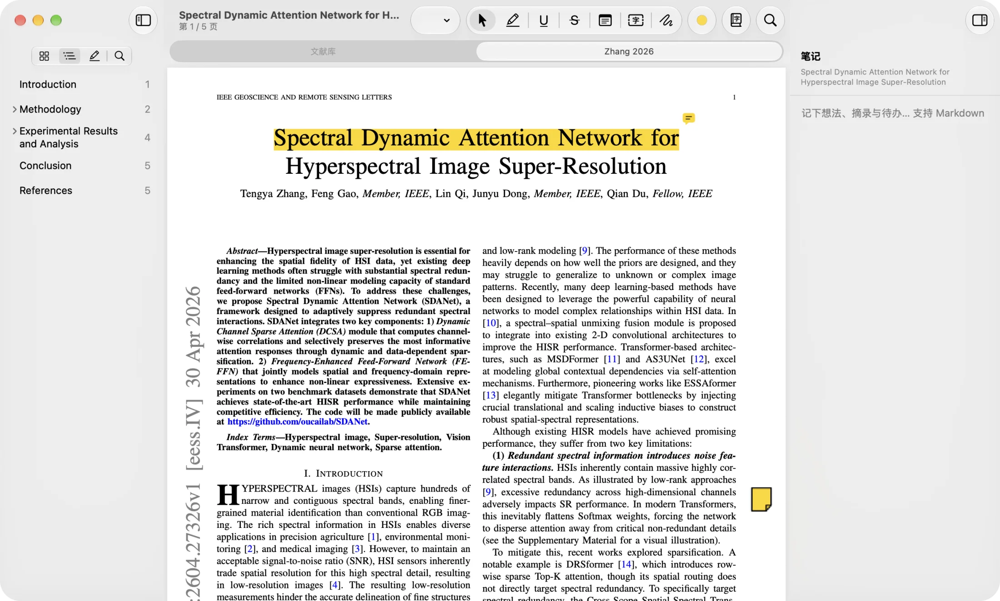
批注工具
批注直接写进 PDF 文件，换任何 PDF 阅读器都能看到。工具栏上的工具：
| 工具 | 用法 |
|---|---|
| 高亮 / 下划线 / 删除线 | 选中工具后拖选文字；也可以先选中文字再点工具。点批注可改颜色或删除。默认高亮颜色在 设置 ▸ 阅读 ▸ 批注。 |
| 便签 | 在页面上点一下，写下评论。 |
| 文本框 | 在页面上放一段文字，可拖动、调整大小。 |
| 手绘 | 用鼠标或触控板 / 触控笔自由画线、圈画。 |
| 橡皮擦 | 擦掉手绘笔迹的任意部分（⌃⌘E / CtrlAltE）。大小分小、中、大三档，按 [ ] 切换。 |
检查器的 标注 标签页列出这篇论文的全部批注，点一条就跳到那一页。批注作者名可在 设置 ▸ 阅读 ▸ 批注作者 设置。
编辑 PDF 文字
发现原文或译文有错字、译得不准？可以直接改 PDF 里的文字：
- 在阅读器工具栏点 编辑 PDF（或菜单 批注 ▸ 编辑 PDF 文字），按钮高亮表示正在编辑。
- 点要改的文字，出现光标后直接输入、删除，就像在文档里打字。
- 点页面别处、按 Esc 或回车即自动保存。编辑中 ⌘Z / CtrlZ 撤销键入，保存后也可以整体撤销。
改动会沿用原文的字体、字号、颜色与词距，只重排受影响的几行，其余排版不变；公式、引用和链接会跟着文字移动。排不下时会稍微收紧行距，仍然超出会提示你。
快速预览
在列表里选中文献后按 空格（Windows 也可以按鼠标中键，或很多触控板的三指点按），不打开阅读器就能快速翻看 PDF；按方向键切换到上一篇 / 下一篇。
笔记
- 每篇文献有一篇 Markdown 笔记：检查器的“笔记”标签页，或右键 ▸ 编辑笔记（⌥⌘N / CtrlAltN）。
- 阅读时选中一段文字，右键 ▸ 添加到笔记（Mac ⌃⌘M），会连同页码一起记下；划词翻译的小窗里也能把译文加入笔记。
- 笔记就是普通的 Markdown 文本，保存在文献库里，可以用任何编辑器打开。
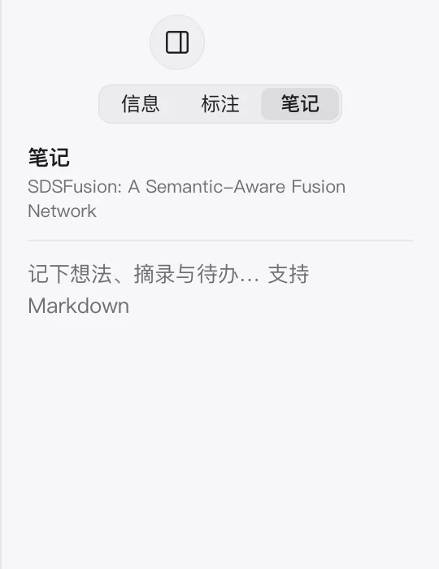
6整篇翻译
Folio 内置翻译引擎，不用另外下载。翻译后的 PDF 保留原来的版面、公式、图表，引用和章节链接依然能点；翻译途中就能打开边译边读。译文作为附件存进同一篇文献，命名如“论文（简体中文译文 · DeepSeek · deepseek-chat）.pdf”。
开始翻译
- 选中一篇或多篇文献（多选即批量翻译），右键 ▸ 翻译全文…，或工具栏的翻译按钮（⌃⌘T / CtrlAltT）。
- 在弹出的面板里确认翻译服务、语言和选项（这些会成为之后的默认值），点 开始翻译。
- 列表里会显示进度；完成后弹出提示，点“打开译文”即可阅读。翻译途中也可以打开阅读器，已经译好的页会先显示出来。
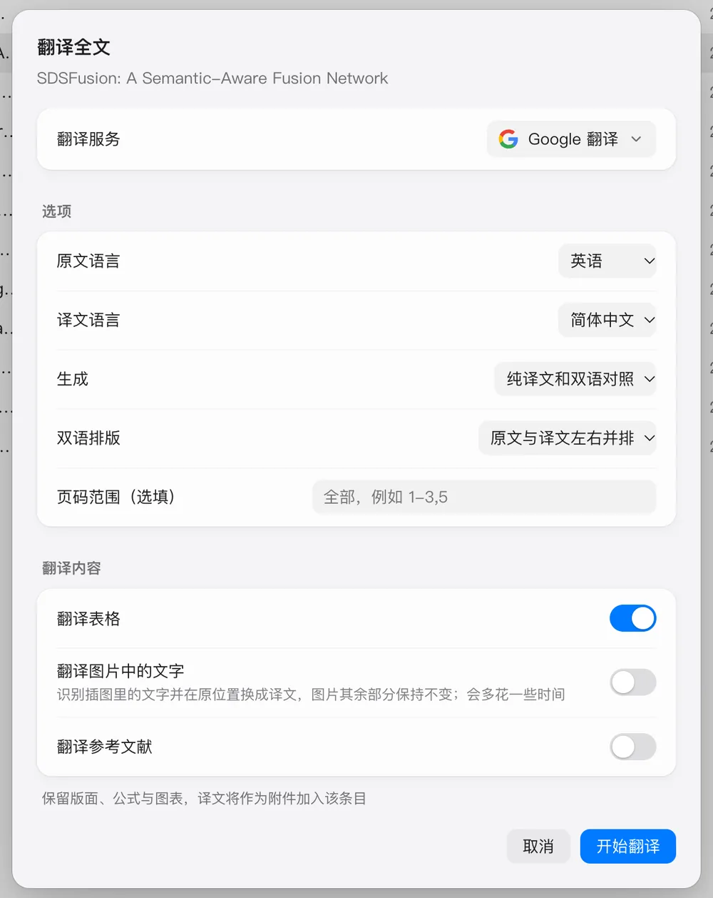
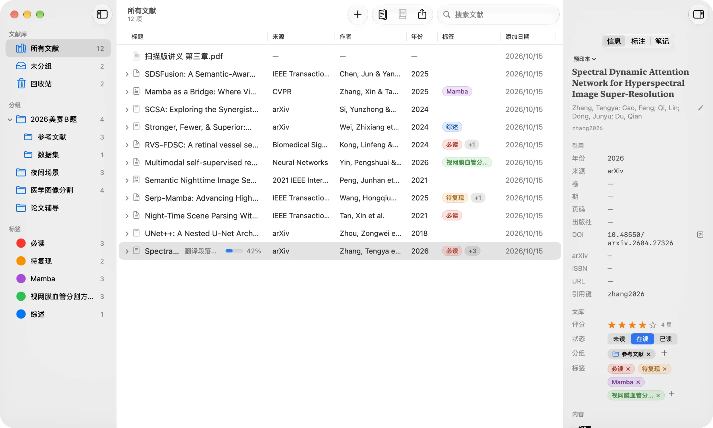
翻译选项
| 选项 | 说明 |
|---|---|
| 原文语言 / 译文语言 | 一般是英语 → 简体中文，也支持日、韩、法、德、西等常用语言。 |
| 生成 | 纯译文（只有译文的 PDF）、双语对照，或两者都要。 |
| 双语排版 | 原文与译文左右并排，或原文页与译文页交替。 |
| 页码范围 | 只译部分页，如 1-3,5；留空译全部。 |
| 翻译表格 | 表格逐格翻译。 |
| 翻译图片中的文字 | 识别插图里的文字并在原位置换成译文，见下文。 |
| 翻译参考文献 | 默认不翻译参考文献列表。 |
| 术语表（选填） | 一个 CSV 文件，每行“原文, 译文”，让专有名词按你的译法翻译。即使不填，使用大模型时 Folio 也会先从论文里自动提取术语表，让同一个词前后译法一致。 |
| 再次翻译 | 同一服务与模型重复翻译时，保留两者或替换旧的译文。 |
| 同时翻译 / 同时请求数 | 批量翻译时同时进行几篇；每篇同时发几个请求。遇到服务限流（报错 429）时调小。 |
| 重新翻译（不使用缓存） | Folio 会缓存已译段落，再译同一篇时直接复用、几乎瞬间完成；勾选此项则全部重译。 |
以上选项在“翻译全文”面板和 设置 ▸ 翻译 中都能改。
选择翻译服务
在 设置 ▸ 翻译 ▸ 翻译服务 选择。服务分五类，按需选用：
| 类别 | 服务 | 适合谁 |
|---|---|---|
| 免费 | Google、Microsoft | 开箱即用，不用任何配置。频繁使用可能被限流，两者会自动互为备用。 |
| 本机 | Ollama、LM Studio、Mac Apple 系统翻译（离线，需要 macOS 26） | 不想把论文发到网上；需要电脑上先运行模型。 |
| 本机智能体 | Claude Code、Codex、Gemini CLI、CodeBuddy（WorkBuddy）、Grok CLI、Antigravity CLI、GitHub Copilot CLI、Cursor CLI、Qwen Code、Kimi CLI、Kiro CLI、Cline CLI、opencode、Factory Droid、Amp、goose、pi、Hermes Agent、OpenClaw、DeepSeek Harness | 已经装好并登录了这些 AI 编程工具的人：用你已有的账号翻译，不用另配 API Key。翻译质量高。 |
| 大模型 API | OpenAI、Anthropic Claude、Gemini、DeepSeek、阿里云百炼、智谱 AI、SiliconFlow、ModelScope、Groq、xAI Grok、Azure OpenAI、OpenAI 兼容接口（中转站等） | 有 API Key 的人。速度快、质量高。 |
| 机器翻译 API | DeepL、Azure 翻译、腾讯云机器翻译、通义千问 MT、自定义命令行翻译器 | 需要稳定的商用机器翻译。 |
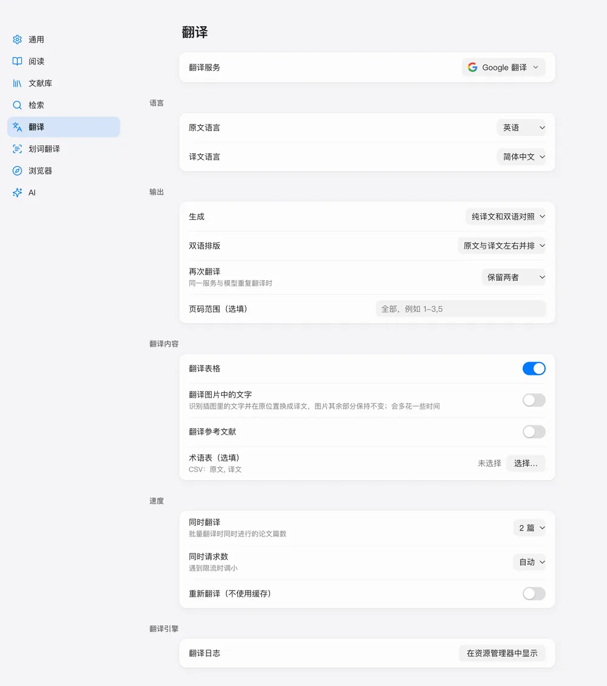
- 填写 API Key：密钥由系统加密保存（Mac 钥匙串、Windows DPAPI），不会明文存放。
- 测试：填好后点“测试”，用一句话确认服务可用。
- 配置：同一个服务可以“存为配置…”保存多套地址 / 模型 / Key（比如两个中转站），在“配置”下拉框里切换。
用本机智能体翻译
电脑上装好并登录了 Claude Code、Codex、Gemini CLI 等 AI 工具，Folio 会自动找到它们，列在服务菜单的“本机”分组里（没装的不显示）。选中后状态行会显示“已找到 …（版本）”。
没找到？先在终端里运行一次该工具并完成登录，再回到设置页。装在特殊位置的，可以在服务的“高级”里填写命令路径。
CodeBuddy（WorkBuddy）
WorkBuddy 桌面版的登录只能在它自己的应用里用，其他程序借用不了。Folio 用的是同一账号的 CodeBuddy 命令行：
- 选择服务“CodeBuddy（WorkBuddy）”。如果检测到你装了 WorkBuddy 但还没装命令行，会显示提示和 安装 CodeBuddy 命令行 按钮，点一下自动安装。
- 安装完成后会自动打开终端（Windows 是命令行窗口），选择中国站，用 WorkBuddy 的腾讯账号登录一次。
- 回到 Folio，状态变为“已找到”即可使用。只有尚未登录时才会出现“在终端登录”按钮。
模型列表读取你账号实际可用的全部模型；不选模型时 Folio 自动选用账号里速度快的模型。
模型与思考程度
- 模型：在“模型”框里输入，或点右侧箭头从服务提供的列表里选（列表读自服务本身或智能体自己的配置）。留空表示用服务 / 智能体的默认模型。
- 思考程度：支持推理的模型和智能体会显示这一项（如 低 / 中 / 高）。标有“（推荐）”的是 Folio 默认使用的档位——翻译不需要深度思考，越低越快，质量差别很小。
- 有的模型名字本身就带档位（如
gemini-3.8-flash-high），这时思考程度“由所选模型决定”；不支持推理的模型会显示“当前模型不支持”。 - 由智能体决定：不传这个参数，沿用智能体自己的设置。
翻译图片中的文字
论文插图（流程图、框图、坐标轴、图例）里的英文，打开“翻译图片中的文字”后也会翻译：Folio 识别图中的文字，只擦掉文字笔画，在原位置换上译文。图形、线条和配色保持不变，字号、对齐、居中和对称关系也照原样保留。
- 跨几行的标注会作为一整句翻译，再按原来的行数分回去；✓ ✗、箭头等图标保持原样；SnakeSAM、ResNet 这类名称不翻译。
- 会结合论文标题、摘要、术语表和图注来翻译图中的专业名词，与正文译法一致。
- 图片文字与正文同时识别、同时翻译，一般只多花几秒。
Windows 图片文字由 Windows 自带的“文字识别”读取，它按语言分别安装，中文 Windows 默认只有中文。用中文识别读英文插图，小字和斜体容易读错，Folio 会把读不准的标注保留原文，以免出现乱码。
要完整翻译英文插图，请安装英文文字识别：打开 设置 ▸ 翻译，在“翻译图片中的文字”下方会提示“Windows 没有安装英语的文字识别”，点 安装…，在 Windows 的弹窗里确认管理员权限，装完重新启动 Folio。也可以在 Windows 设置 ▸ 时间和语言 ▸ 语言 添加英语并勾选“光学字符识别”。
Mac 自带多语言识别，不需要额外安装。
对照阅读
翻译完成后，在阅读器里点 对照阅读，原文与译文并排显示，方便逐段对照。阅读器工具栏的翻译按钮菜单里也能随时切换、重新翻译或取消翻译。
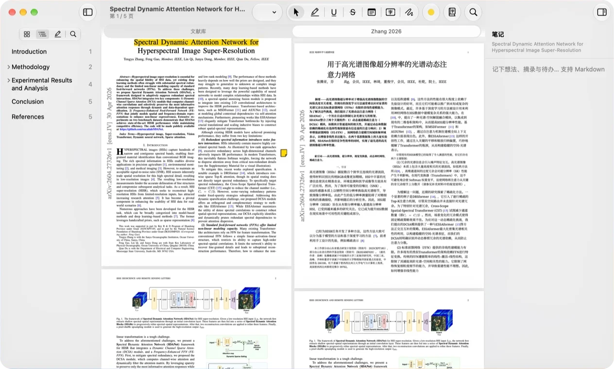
速度与出错
- 为什么有的服务慢：本机智能体每次请求都要启动一个程序，单批需要几秒到几十秒；Folio 会把论文分成多批同时翻译（默认 8 批并行）。推理模型想得越多越慢，把思考程度调低是最有效的提速办法。
- 出错时：每次请求失败，Folio 都会立刻弹出提示，写明服务返回的具体原因（如“服务器拒绝连接”“API Key 无效”“额度用完”），并显示正在第几次重试。一分钟没有收到回复时，进度会显示“正在等待某某回复（已等 N 分钟）”。
- 最终失败会弹窗说明原因，可以点“重试”，或点“查看日志”。翻译日志在 设置 ▸ 翻译 ▸ 翻译引擎 ▸ 翻译日志。
- 部分段落被拒绝：有的服务有内容审核，被拒的段落保留原文，完成时会告诉你有几段。
常见错误和对应的解决办法见常见问题。
7划词翻译
阅读时选中一段文字，就能在小窗里看到译文，可以拷贝、加入笔记，或换一个服务再译。
- 触发方式（设置 ▸ 划词翻译 ▸ 触发方式）：选中后显示翻译按钮（默认）/ 选中后自动翻译 / 仅使用快捷键。
- 快捷键：默认 ⌥D / AltD，点快捷键按钮后按下新组合即可修改。
- 服务：可与全文翻译相同，也可单独选一个更快的服务。免费服务被限流时，Google 与 Microsoft 会自动互为备用。
- 小窗可以拖到任意位置，之后都在那里显示；关掉后恢复跟随选区。
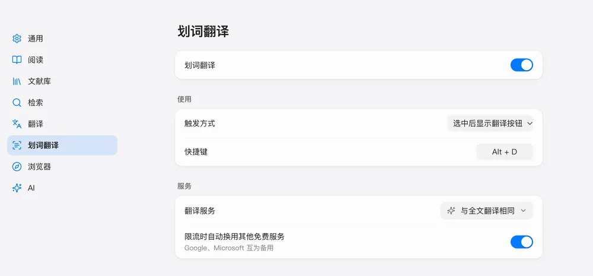
8引用与导出
- 复制引用：选中文献，⇧⌘C / CtrlShiftC 按默认样式复制参考文献条目，直接粘贴到论文里。
- 其他样式：工具栏的“引用与导出”或右键 ▸ 引用与导出 ▸ 复制引用，可选 GB/T 7714-2015、APA、IEEE、MLA、Chicago、Harvard、Vancouver、Nature、BibTeX。默认样式在 设置 ▸ 通用 设置。
- 文内引用：“复制文内引用”得到 (Chen et al., 2025) 或 [1] 这样的格式。
- 导出：导出 BibTeX、RIS、CSL JSON 文件（⇧⌘E / CtrlShiftE），供 LaTeX、Word 插件或其他软件使用。
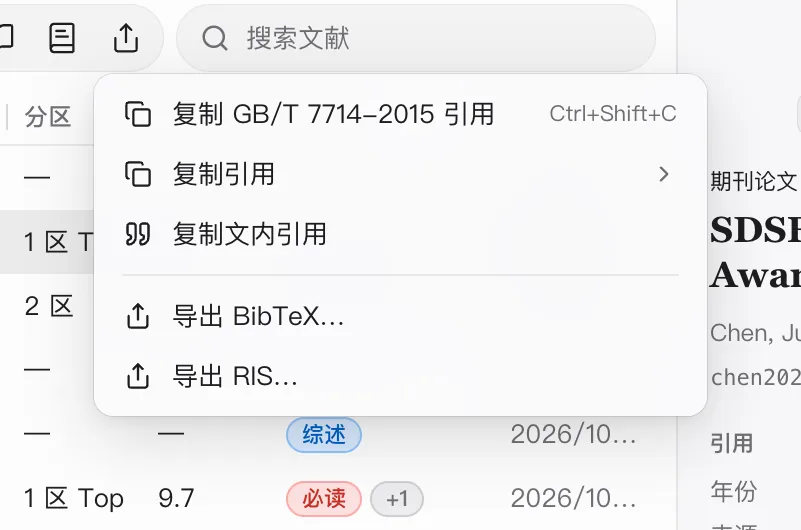
9浏览器插件
在期刊网站、arXiv、Google Scholar 等论文页面点一下插件按钮，论文（能下载时连同 PDF）就存进 Folio；在搜索结果页还能批量保存。Folio 需要在运行中。
Chrome、Edge、Brave、Arc、Vivaldi、Opera
- 打开 设置 ▸ 浏览器，在你的浏览器旁点 安装…。Folio 会打开浏览器的扩展页面，并显示 Folio 插件文件夹（Mac 安装向导里有一个可拖动的文件夹卡片，Windows 会在资源管理器中选中它）。
- 在扩展页面打开右上角（Edge 在左侧）的 开发者模式。
- 把插件文件夹直接拖进扩展页面，松开即安装。也可以点“加载已解压的扩展程序”选择这个文件夹。
Folio 更新后插件文件会自动更新。
Firefox
在地址栏打开 about:debugging#/runtime/this-firefox，点“临时载入附加组件…”，选择插件文件夹里的 manifest.json。Firefox 重启后需要重新载入。
Mac Safari
- Safari ▸ 设置 ▸ 高级，勾选“显示网页开发者功能”。
- Safari ▸ 设置 ▸ 开发者，勾选“允许未签名的扩展”（每次重新打开 Safari 后需再勾选一次）。
- Safari ▸ 设置 ▸ 扩展，勾选“Folio 文献保存”，并允许它在所有网站上使用。
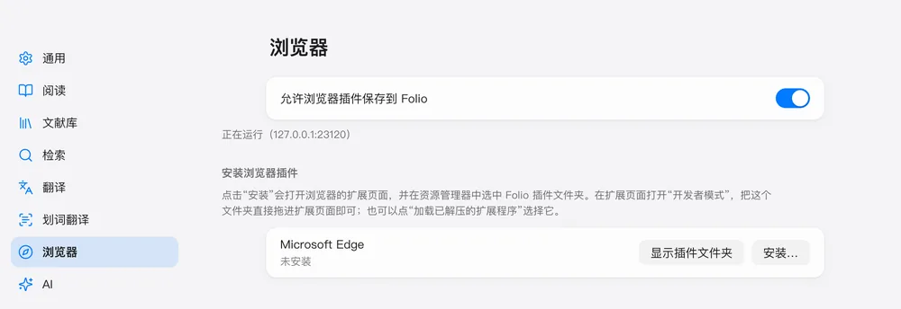
插件通过本机的 127.0.0.1:23120 与 Folio 通信，只接受浏览器扩展的请求，不对外开放。不需要时可在 设置 ▸ 浏览器 关闭“允许浏览器插件保存到 Folio”。
10AI 接入
Folio 内置 MCP 服务器和命令行工具 folio-cli，让 Claude Code、Codex、Gemini CLI、Cursor 等 AI 智能体能按描述找论文、读全文和批注、生成准确的引用，甚至帮你整理分组和标签。
- 打开 设置 ▸ AI。Folio 列出电脑上找到的智能体（装好后点“重新检测”）。
- 每个智能体有两个开关：MCP（让它调用 Folio 的 26 个工具）和 技能（教它怎么用 Folio、哪些操作要先问你）。打开即写入该智能体的配置，修改前自动备份；关闭即移除。
- 重启智能体或开始新会话后生效。然后就可以对它说：“在我的文献库里找关于血管分割的综述，并给出 GB/T 7714 格式的引用。”
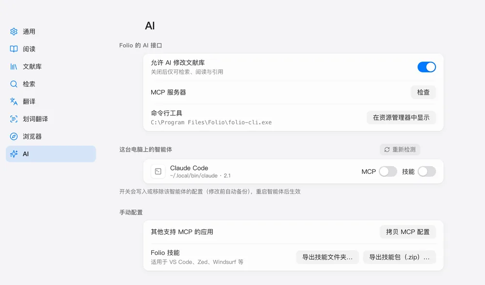
- 只读模式：关闭“允许 AI 修改文献库”后，智能体只能检索、阅读和引用。
- 其他应用：VS Code、Zed、Windsurf 等支持 MCP 的编辑器，用“拷贝 MCP 配置”手动添加；也可以导出技能文件夹或技能包。
- 命令行：
folio-cli search | get | cite | export | add | open供只能运行命令的工具使用，folio-cli status检查文献库和权限。位置：Mac/Applications/Folio.app/Contents/MacOS/folio-cli，Windows 在Folio.exe旁边。
11设置详解
打开设置：Mac ⌘,；Windows 点左上角齿轮。
通用
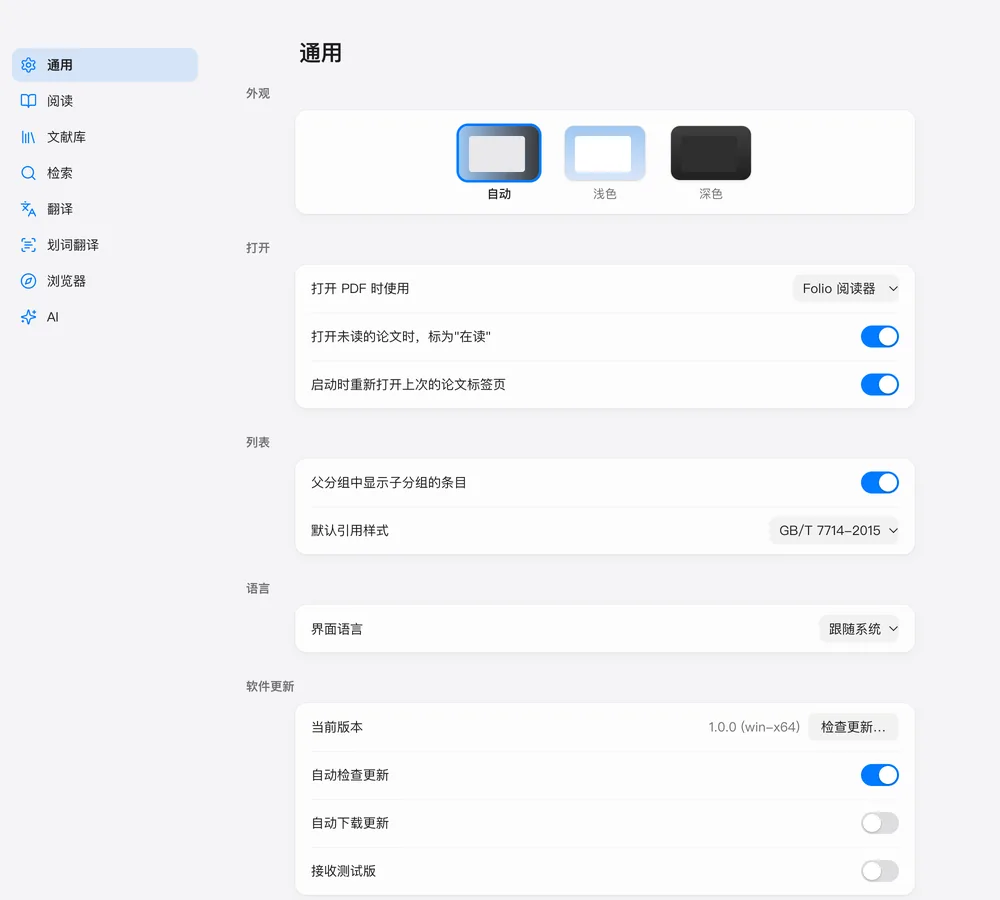
- 外观：自动 / 浅色 / 深色；背景透明度调节列表与阅读器背景的磨砂程度（macOS 26 的 Liquid Glass、Windows 11 的亚克力）。
- 打开：PDF 用 Folio 阅读器、系统默认应用或指定应用打开；打开未读论文时标为“在读”；启动时重新打开上次的标签页。
- 列表：父分组中显示子分组的条目；默认引用样式。
- 语言：界面语言，跟随系统、简体中文或 English，重新启动后生效。
- 软件更新：检查更新、自动检查、自动下载、接收测试版。
- 帮助：欢迎向导、使用文档、主页、报告问题。
阅读
首次打开的缩放（适合页宽 / 实际大小）、单页或双页连续、页面阴影；默认高亮颜色、批注作者。
文献库
文献库位置（更改会搬移整个文献库）、打开其他文献库、按“作者_年份_标题”重命名文件、自动清理回收站、从 Zotero 导入。
检索
添加 PDF 后自动检索元数据、使用 Zotero 识别服务（会发送 PDF 前 5 页文字，无需账号）、联系邮箱与 OpenAlex API Key（选填，可提高查询配额）、期刊指标。
翻译 / 划词翻译 / 浏览器 / AI
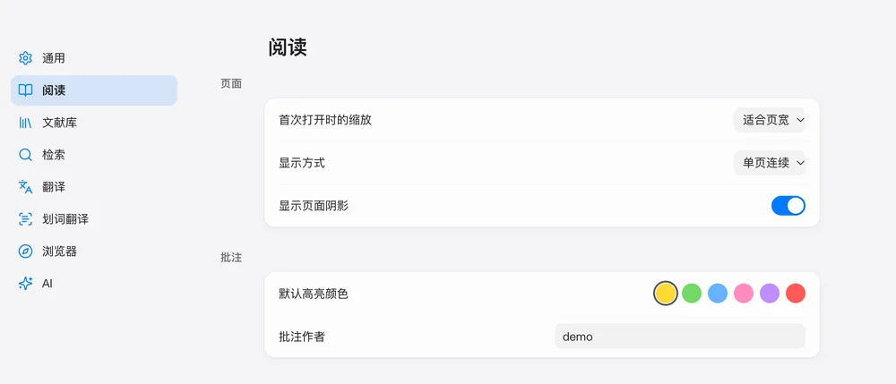
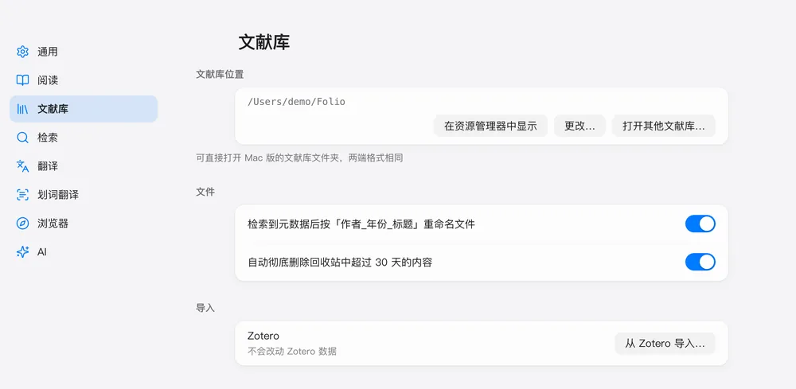
12多台电脑与同步
Folio 不需要账号，也没有服务器。想在实验室和家里、Mac 和 Windows 之间用同一个文献库：
- 把文献库文件夹移到同步盘（iCloud 云盘、OneDrive、坚果云、Dropbox 等）：设置 ▸ 文献库 ▸ 文献库位置 ▸ 更改…。
- 在另一台电脑上安装 Folio，设置 ▸ 文献库 ▸ 打开其他文献库…，选择同步盘里的同一个文件夹。
请等同步完成后再在另一台电脑上打开，并避免两台电脑同时修改同一个文献库，以免同步盘产生冲突副本。
13更新
- Folio 会定期自动检查新版本（可在 设置 ▸ 通用 ▸ 软件更新 关闭）。发现新版本时，边栏左下角出现“有新版本可用”卡片，不会打断你阅读；点它查看更新内容并安装。
- 打开“自动下载更新”后会在后台下好，卡片变为“重新启动以更新”，点一下即完成。
- 手动检查：Mac Folio ▸ 检查更新…；Windows 设置 ▸ 通用 ▸ 检查更新…。
14快捷键
| 操作 | Mac | Windows |
|---|---|---|
| 添加文件 | ⌘O | CtrlO |
| 通过 DOI / arXiv / ISBN 添加 | ⇧⌘O | CtrlShiftO |
| 新建分组 | ⇧⌘N | CtrlShiftN |
| 导入 BibTeX / RIS | ⇧⌘I | CtrlShiftI |
| 导出参考文献 | ⇧⌘E | CtrlShiftE |
| 复制引用 | ⇧⌘C | CtrlShiftC |
| 搜索 / 查找 | ⌘F | CtrlF |
| 快速预览 | 空格 或 ⌘Y | 空格 或鼠标中键 |
| 添加选中文字到笔记（阅读时） | ⌃⌘M | 右键 ▸ 添加到笔记 |
| 编辑笔记 | ⌥⌘N | CtrlAltN |
| 翻译全文 | ⌃⌘T | CtrlAltT |
| 划词翻译（默认） | ⌥D | AltD |
| 重新检索元数据 | ⌥⌘R | CtrlAltR |
| 在 Finder / 资源管理器中显示 | ⇧⌘R | CtrlShiftR |
| 橡皮擦 | ⌃⌘E | CtrlAltE |
| 显示 / 隐藏边栏 | ⌃⌘S | 点边栏按钮 |
| 显示 / 隐藏检查器 | ⌥⌘I | 点检查器按钮 |
| 回到文献库窗口 | ⇧⌘L | — |
| 打印 | ⌘P | CtrlP |
| 设置 | ⌘, | 点左上角齿轮 |
| 删除到回收站 | ⌘⌫ | Delete |
右键菜单里每一项旁边也会显示它的快捷键。
15常见问题
拖入的 PDF 没有识别出标题和作者？
可能是扫描件（先等 OCR 完成）、或者 PDF 里没有 DOI 等信息。右键 ▸ 重新检索元数据；仍不行就在检查器里手动填写 DOI 后再检索，或直接手动填写各字段。
翻译提示“API Key 无效 / 未授权”？
在 设置 ▸ 翻译 重新粘贴 Key（注意不要带空格），点“测试”。使用中转站时，确认 Base URL 正确，一般以 /v1 结尾。
翻译提示“请求太频繁（429）”或“额度用完”？
服务限流了。Folio 会自动等待后重试；频繁出现时把 设置 ▸ 翻译 ▸ 同时请求数 调小，或换一个服务。额度用完需要到服务商处充值。
用智能体翻译提示“还不能使用 / 需要登录”？
先在终端里运行一次该智能体（例如 claude、codex），按提示完成登录，然后回到 Folio 重试。CodeBuddy 见CodeBuddy 的说明。
翻译很慢怎么办？
把“思考程度”调到推荐的最低档；选择速度更快的模型（例如 flash / mini 系列）；免费服务被限流时换成大模型 API。只想先看一部分时，在“页码范围”里只填前几页。
译文里个别地方翻得不对？
直接用编辑 PDF 文字修改；或者把常用术语写进术语表 CSV，下次翻译会按你的译法。勾选“重新翻译（不使用缓存）”可以整篇重译。
图片里的文字没有翻译，或在 Windows 上识别得不好？
确认翻译时打开了“翻译图片中的文字”。Windows 需要安装论文语言的文字识别，见翻译图片中的文字。字太小（印刷后难以辨认，如截图中的软件按钮）的文字会被跳过。
浏览器插件点了没反应？
确认 Folio 正在运行，且 设置 ▸ 浏览器 中“允许浏览器插件保存到 Folio”已打开；Safari 每次重启后要重新勾选“允许未签名的扩展”。
打不开文献库 / 提示文献库位置无效？
同步盘可能还没下载完。等同步完成后，在 设置 ▸ 文献库 中重新选择文献库位置。
怎么反馈问题？
在 GitHub Issues 提交，或用 Mac 帮助 ▸ 报告问题…、Windows 设置 ▸ 通用 ▸ 帮助 ▸ 报告问题…。翻译相关的问题，附上翻译日志会更快定位。
16隐私与数据
Folio 不收集任何使用数据，文献库完全保存在你自己的电脑上，MIT 开源。只有以下情况会访问网络：
- 识别元数据：向 Zotero 识别服务、Crossref、arXiv、OpenAlex、DBLP 等查询（Zotero 识别服务可关闭）。
- 翻译：把论文文本发送给你选择的翻译服务（本地模型和 Apple 系统翻译不会发送到外部）。
- 期刊指标：填写 easyScholar 密钥后查询期刊名。
- 检查更新：从 GitHub Releases 读取版本信息（可关闭自动检查）。
翻译服务的 API Key 由系统加密保存（Mac 钥匙串、Windows DPAPI）。